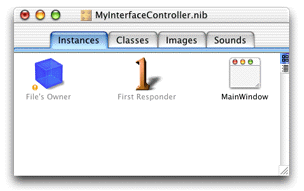
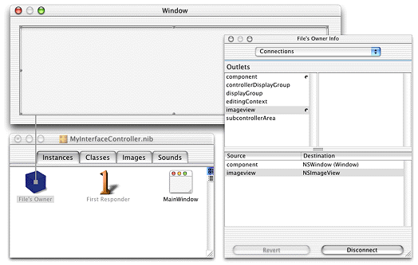

Interface Builder is the best tool for building Java Client user interfaces as it allows you to visually associate user interface widgets with outlets and actions in the class file. When you associated File's Owner with the custom subclass of EOInterfaceController, the icon for File's Owner changed to include an exclamation point, as shown in Figure 18-4.
Figure 18-4 File's Owner icon with exclamation point
The exclamation point icon indicates that File's Owner's
connections are broken or incomplete. In this case, the imageview outlet
you added is not connected (it is not associated with anything).
To make the connection, Control-drag from File's Owner to the image
view widget you placed in the main window as shown in Figure 18-5.
Figure 18-5 Connect outlet to widget
In the File's Owner Info window, select the imageview outlet
and click Connect. The File's Owner Info window should then appear
as in Figure 18-5.
Save the interface file. It is now prepared to display an image in the client application.